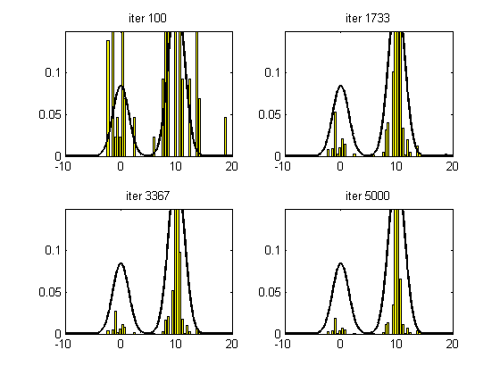

Find the mode of a mixture of 2, 1D Gaussians using Simulated Annealing
function saDemoMOG()
sigma_prop = 10;
seed = 1; randn('state', seed); rand('state', seed);
xinit = 20*rand(1,1);
Nsamples = 5000;
opts = struct(...
'proposal', @(x) (x+sigma_prop*randn(1,1)), ...
'maxIter', Nsamples, ...
'minIter', Nsamples, ...
'temp', @(T,iter) (0.995*T), ...
'verbose', 0);
[xopt, fval, samples, energies, acceptRate] = simAnneal(@target, xinit, opts);
xopt
fval
N_bins = 50;
Nsamples = size(samples, 1)
Ns = round(linspace(100, Nsamples, 4));
figure;
for i=1:4
subplot(2,2,i)
x_t = linspace(-10,20,1000);
y_t = exp(-feval(@target, x_t));
[b,a] = hist(samples(1:Ns(i)), N_bins);
measure = a(2)-a(1);
area = sum(b*measure);
bar(a,b/(area),'y')
hold on;
plot(x_t,y_t,'k','linewidth',2)
axis([-10 20 0 .15])
title(sprintf('iter %d', Ns(i)))
end
end
function p = mogProb(x)
mixWeights = [0.3 0.7];
mu = [0 10];
sigma = [2 2];
K = length(mixWeights);
N = length(x);
p = zeros(N,1);
for k=1:K
p = p + mixWeights(k)*gaussProb(x(:), mu(k), sigma(k));
end
end
function E = target(x)
p = mogProb(x);
E = -log(p+eps);
end
xopt =
10.000289568587938
fval =
1.622187088379925
Nsamples =
5000
